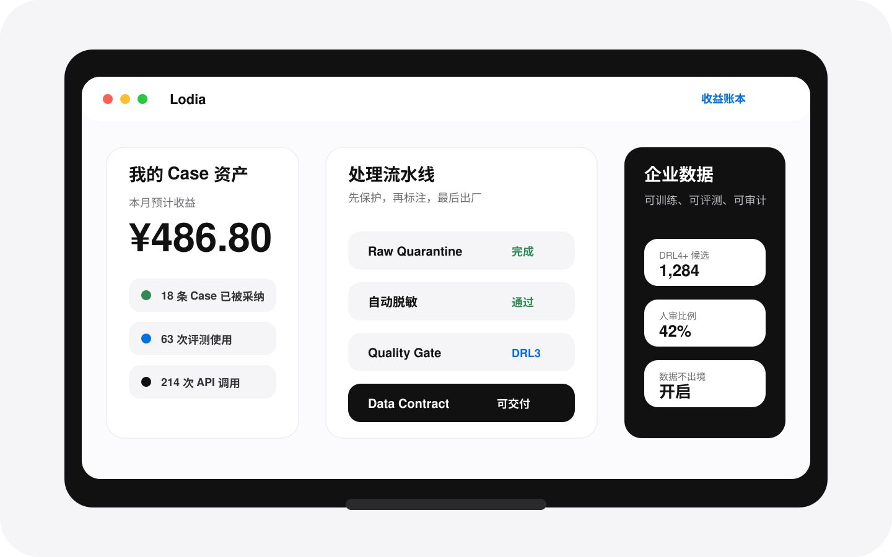

转发或上传
把 ChatGPT、Kimi、Claude、Codex、Cursor 等对话和任务记录转发到你的 Lodia Inbox。
把 AI 工作记录变成可复用、可变现的数据资产。
转发或上传你的 AI 对话、任务记录和案例。Lodia 自动脱敏、去重、标注和审核。优质 Case 被采纳、授权或使用后，你可以获得收益。

Lodia 面向 AI 重度用户、开发者、顾问、运营、客服、销售和行业专家。你不需要手工整理数据，只需要把有价值的 AI 工作记录交给 Lodia。
把 ChatGPT、Kimi、Claude、Codex、Cursor 等对话和任务记录转发到你的 Lodia Inbox。
系统先隔离原始数据，再完成脱敏、残留扫描、去重、结构化和质量评分。
Case 被加入数据集、被评测使用、被 RAG/API 调用或被训练任务纳入后，进入收益账本。
Lodia 中国区默认独立运营，生产数据、日志、模型调用和备份留存在中国大陆。原始数据进入隔离区，脱敏后才进入标注和审核链路。
Lodia 帮企业把员工 AI 使用过程沉淀为私有案例库、评测集、培训集和高质量训练数据候选池。
每个可交付数据集都经过 DRL 分级、Quality Gate、Data Contract 和 Quality Report。
个人早期贡献者、企业数据合作和私有化部署咨询，都可以先留下联系方式。